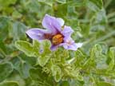

Sodom apple
Solanum linnaeanum (previously S. sodomeum)
Other names
apple of Sodom, popola, Dead Sea apple
Description
Spreading shrub up to 3 m tall with stout prickles and scattered star shaped hairs. The leaves are deeply and irregularly lobed, up to 10 cm long; lobes are nearly obovate, wavy. The flowers are violet, 20 25 cm in diameter. The fruit is a mottled green and white globular berry 25 mm in diameter, becoming yellow as it ripens.
Similar plants
Other Solanum species but thorns and striped unripe fruit are distinctive.
Distribution
May be found in northern half of North Island, especially in sand dune areas.
Toxin
Solasonine, a glycoalkaloid.
Species affected
No poisoning is known to have occurred in New Zealand.
Clinical signs acute
Abdominal pain, vomiting, diarrhoea and depression. Profuse diarrhoea with abdominal pain, depression, weakness and incoordination, trembling, rapid respiration and heart rate, dyspnoea, excessive salivation, nasal discharge and jaundice.
Clinical signs chronic
Post mortem signs
Hyperaemia of the alimentary tract, often with severe haemorrhage, and generalised congestion of visceral organs.
Diagnosis
History, clinical signs, plant in the rumen.
Differential diagnosis
Treatment
Symptomatic treatment. Establish respiration, induce vomiting in the appropriate animals, activated charcoal, saline cathartic, iv fluids to maintain body fluid and electrolyte balance.
Prognosis
Generally depends on the severity of clinical signs and response to treatment. Fatalities are uncommon.
Prevention
References
Conner H.E. The Poisonous Plants In New Zealand. 1992. GP Publications Ltd, Wellington
Parton K, Bruere A.N. and Chambers J.P. Veterinary Clinical Toxicology, 2nd ed. 2001. Veterinary Continuing Education Publication No. 208
|
|
||
|  |
||
|
|
|
|